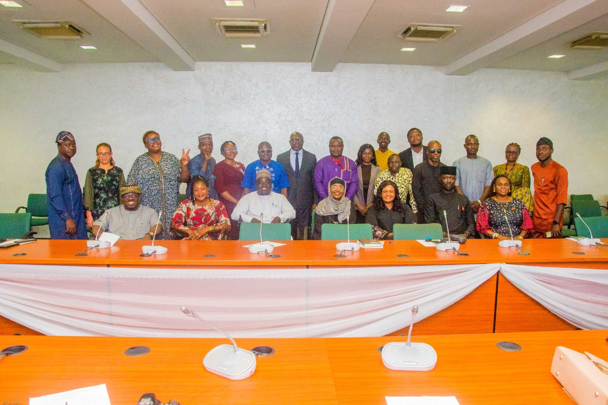
19 August 2026
Stakeholders' Meeting on the National Summit on Disability-Inclusive Climate Action
On 19 August 2026, GDGI convened a Stakeholders' Meeting on the National Summit on Disability-Inclusive Climate Action in Committee Room 301 of the House of Representatives, National Assembly Complex, Abuja bringing together Honourable Members, government institutions, development partners, UN agencies, civil society organisations, Organisations of Persons with Disabilities, and private-sector partners to help shape the summit now scheduled for 14–15 October 2026.
In her opening speech, GDGI Founder and President Angelina Ugben set out why the meeting mattered: climate change affects everyone, but not equally. Persons with disabilities, particularly women, children, and those in vulnerable communities, often face greater barriers during climate-related disasters, while remaining underrepresented in climate policy, decision-making, green jobs, renewable energy, and climate financing. "This must change," she told the room.
She linked the summit directly to COP31 in Antalya, Türkiye, positioned as an implementation-focused COP that will judge climate commitments by measurable, practical results across clean energy and electrification, climate finance, resilient cities and infrastructure, sustainable agriculture, green industrial transformation, and the circular economy. "As Nigeria prepares its climate priorities for COP31, we must ensure that persons with disabilities are not left behind in the implementation of climate commitments," Ugben said, naming renewable energy access, green skills and decent green jobs, climate-smart agriculture, accessible infrastructure, climate information, adaptation programmes, and inclusive climate finance as the specific gaps the summit must address.
Ugben was explicit that the summit is not meant to be another conference of speeches and photographs. "We want this Summit to produce clear commitments, partnerships, policy recommendations and practical actions that can contribute to Nigeria's climate agenda and strengthen the meaningful participation and leadership of persons with disabilities," a goal she said depends on a coalition, not one organisation: government, development partners, UN agencies, the private sector, civil society, academia, media, and, most importantly, Organisations of Persons with Disabilities themselves.
"Nothing about persons with disabilities should be decided without their meaningful participation," Ugben said. Persons with disabilities must not only be present at the table, but part of shaping the policies, programmes and solutions themselves. She thanked the Office of the Senior Special Assistant to the President on Climate Technology and Operations, the Federal Ministry of Environment, the National Council on Climate Change, the ILO, UNDP, the National Assembly, and the development partners, government institutions and Organisations of Persons with Disabilities who have already committed to the initiative, the same co-hosts and sponsors now confirmed on the summit's own registration page.
The meeting's outcomes will directly shape the October summit from its five policy dialogue tracks to the Abuja Declaration on Disability-Inclusive Climate Action it aims to produce. As Ugben put it in closing: "Let this Summit be a turning point from visibility to meaningful participation, from participation to leadership, and from leadership to measurable action."
In pictures
From the meeting
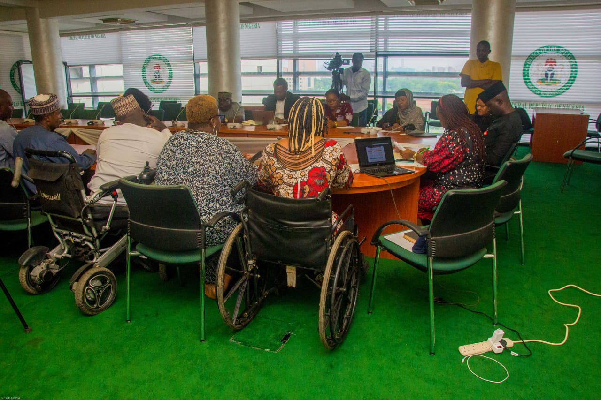
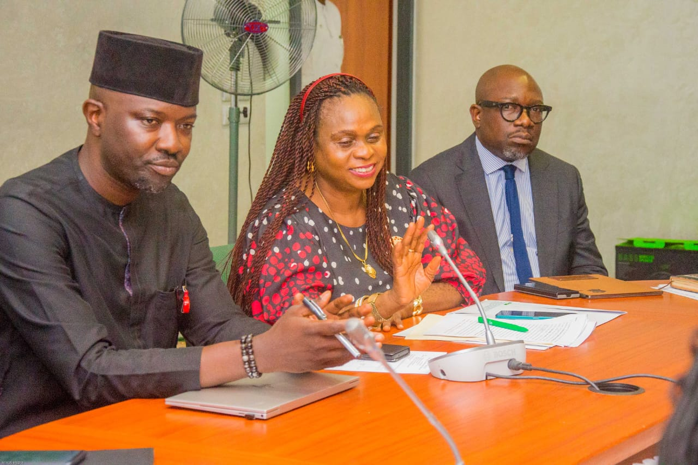
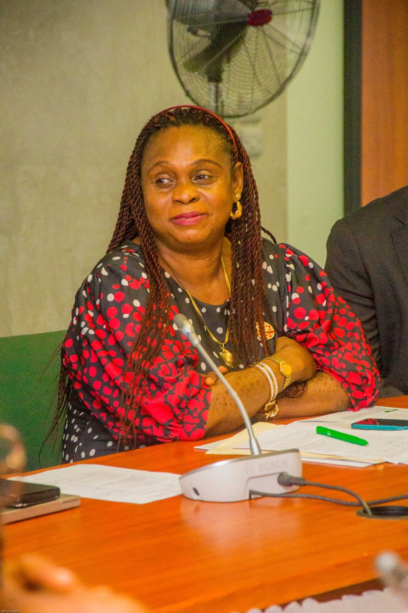
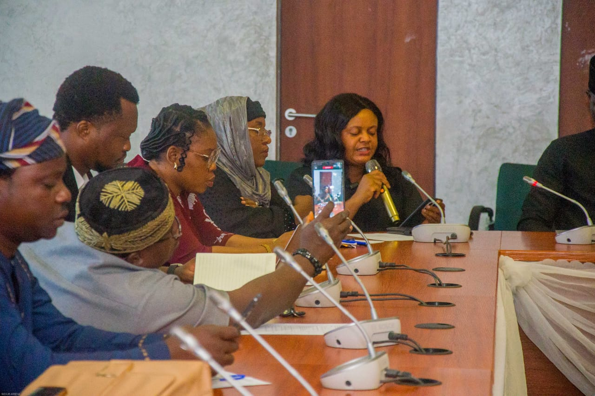
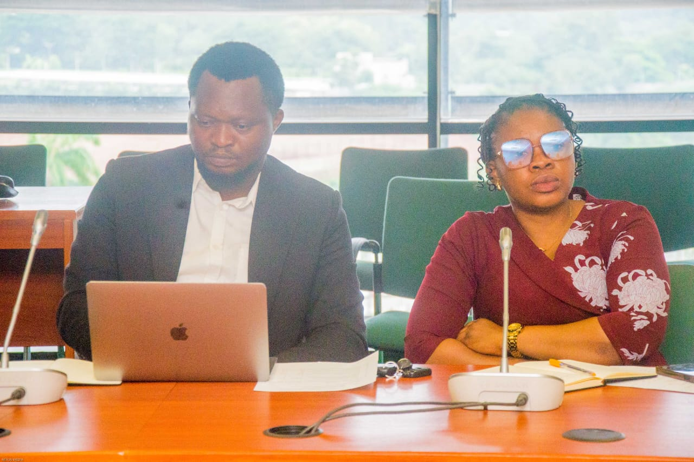
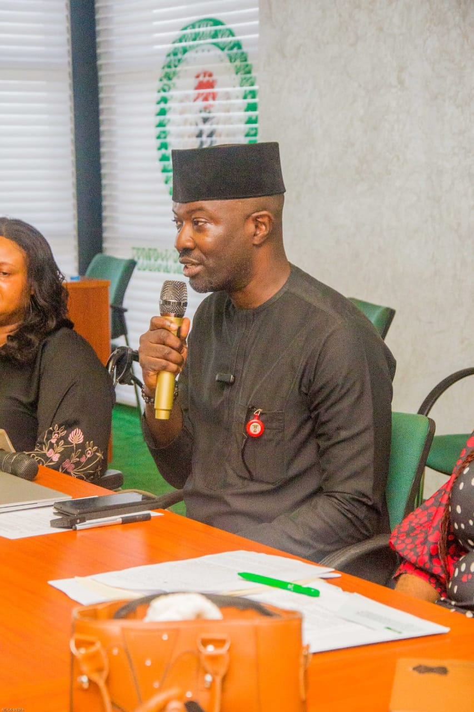
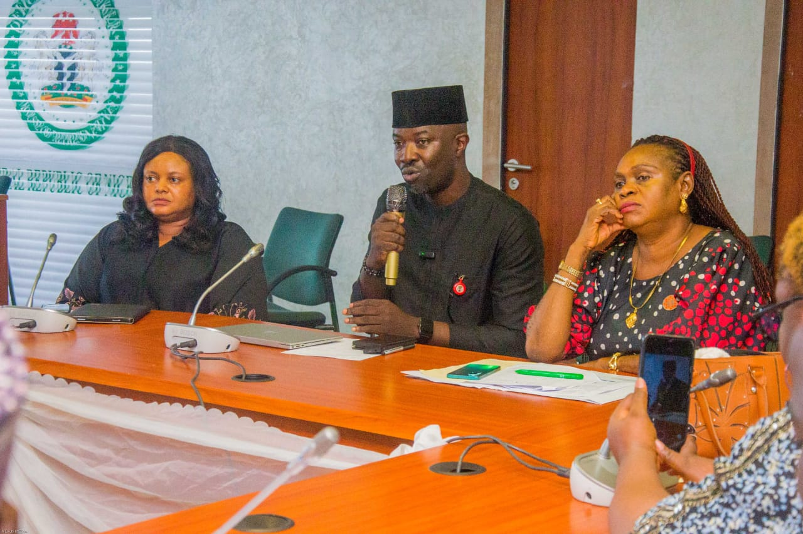
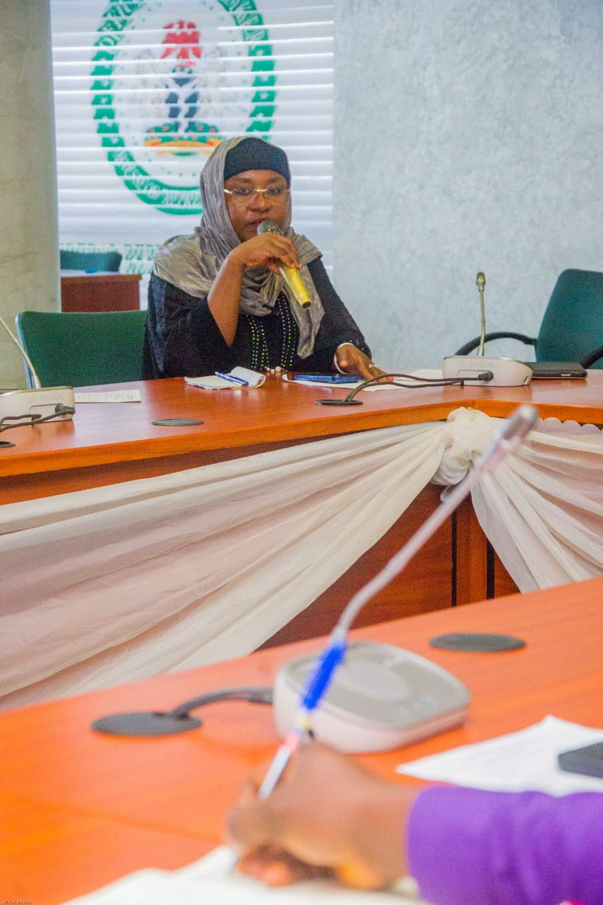
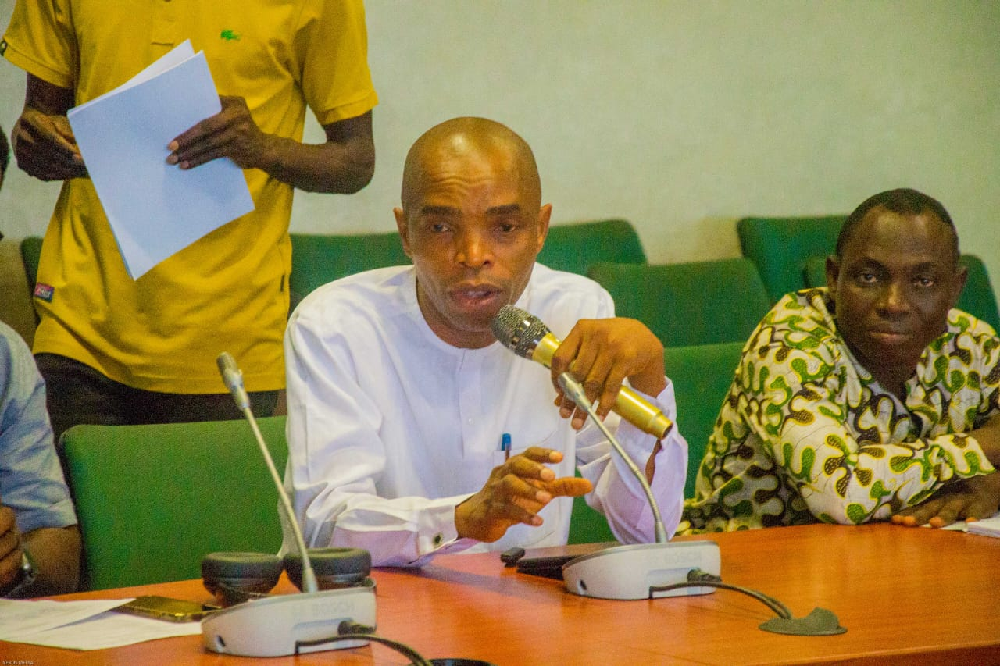
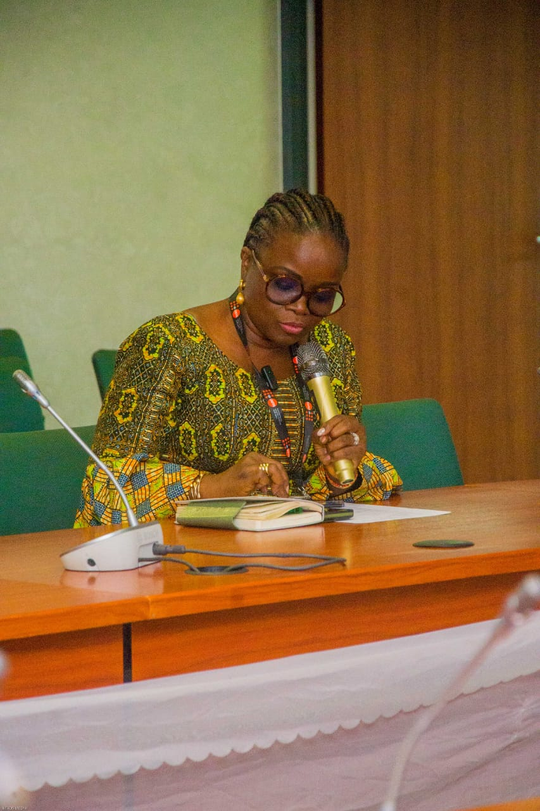
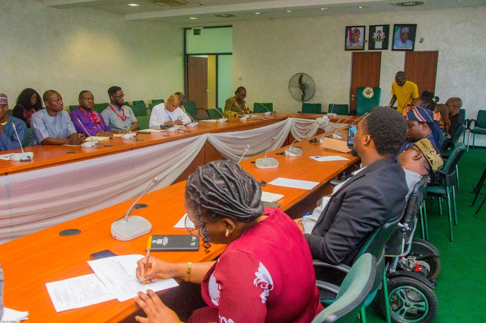
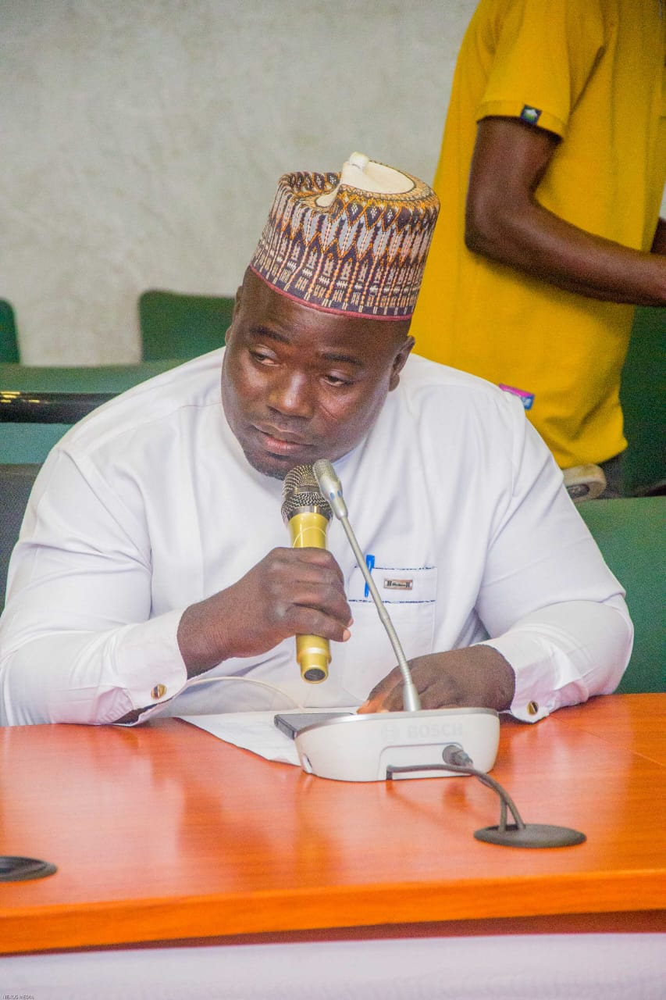
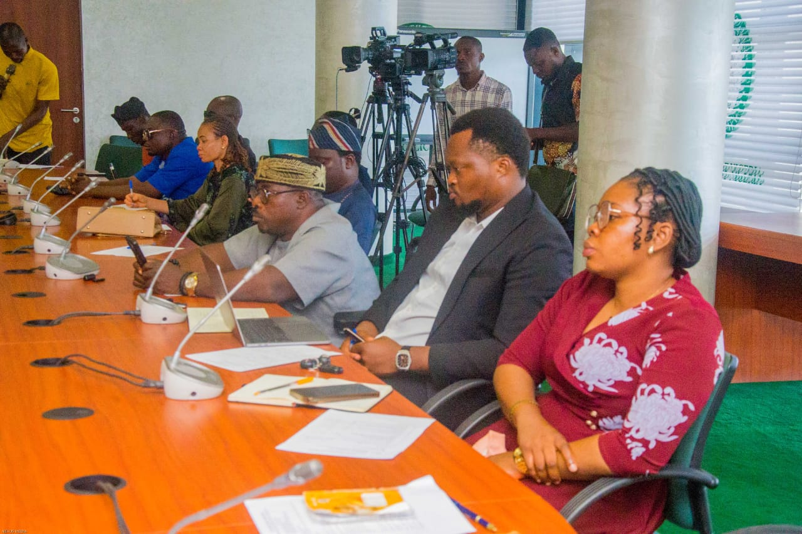
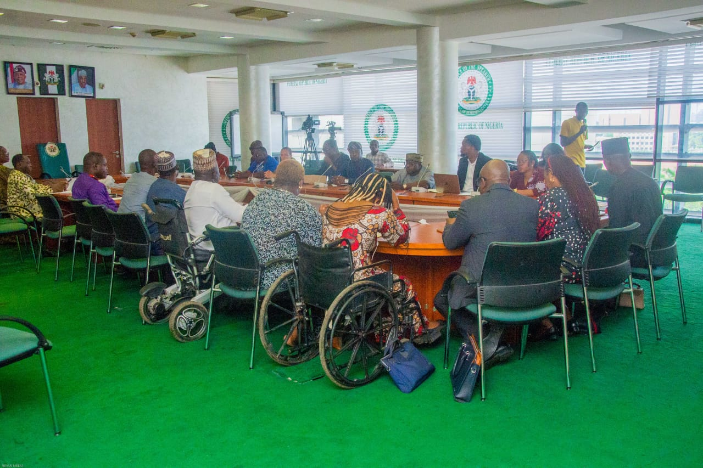